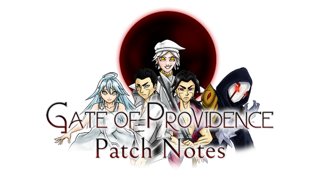

Gate of Providence - Patch Notes
v1.0.3
Balance
- Decreased the overall stats of enemies on Trainee (Very Easy) and Mercenary (Easy) difficulties.
- Increased the STR, DEX, and AGI stats of enemies on War Hero (Hard) and Lunatic (Very Hard) difficulties.
- Judgment - Base Damage reduced by 100 (500 -> 400).
- Ram Stance - Base Damage increased by 5 (75 -> 80).
- The Hierophant - ANI Cost decreased by 5 (15 -> 10).
Other
- Revamped Cooking and Smelting to accept number input. This allows for crafting multiples of items that aren't 1, 5, and 10.
- Guarding will no longer affect healing or Anima gain from items or skills.
- Achievements Go-To Guy, The Hero Iris Deserves, Awaken, My Masters, Can't Hide from the Past, Jun the Explorer, Cat Lover, and Pest Control now have progress bars. (This change will not be visible on older save files.)
- Dependencies (DirectX and Visual C++ Redistributable Packages) have been included with the downloadable zip file.
v1.0.2
Crashes
- Windswept Plateau - It is no longer possible to get stuck between two rocks and the wind areas.
Typos
- In Perennia Mountains, soldier says "Forward".
- Book 8 - Descendants - "others"
Passability
- Fulgurous Ravine - It is no longer possible to walk through a wall.
- Kingmages' Keep - It is no longer possible to walk through a wall.
Balance
- Reduced frequency of encounters in the Perennia Mountains area.
- Reduced Raphael's Max HP.
- Oblivion - Base Damage reduced by 60 (300 -> 240).
- Reduced HP scaling for all enemies.
- Difficulty setting no longer affects enemy HP.
- Difficulty setting affects enemy END/RES less.
- Rabbit Stance - Cooldown increased by 1 (7 -> 8).
- Snake Stance - Cooldown decreased by 2 (22 -> 20).
Other
- Fixed the bug that causes skills like The World to randomly fail.
- Added some dialogue for Reversal of Tides to take into account completion of Land of the Nekos.
- Reduced the maximum wager for G-Coins to 99 due to an oversight.
- Renamed Confusion status ailment to Fumble.
- Moved chests in the Treasury so they cannot be opened from behind a table.
- Added a new tester to the tester room and credits.
- Added Easy, Normal, Hard, Very Hard descriptors to the difficulty levels.
- Added better hints to the quest log for A Shift in Power.
- Calamity Ring now sets Max HP to 1.
v1.0.1
Crashes
- Fixed the crash that occurs when loading save files 9 and above from a save statue. (This fix will not be compatible with older versions, however save files will still work.)
Graphical
- Crystals Orbs in Raphael's Domain, 2nd room, now light correctly. This does not affect gameplay.
- Mercenaries in the Mercenaries' Guild now return after a certain mercenary request.
- Moved the save statues in District Buildings to a more obvious location.
Typos
- Enemy Encounters Tutorial - Removed an extra "to".
- The Moon - In the skill description: "fulled" -> "fully"
- A girl in Saki now says "Wrong person" correctly.
- Suspicious House - "Let's down" -> "Let's get down"
Passability
- A tile in the Dragon's Den will now no longer let you walk through walls.
- The tiles in front of the smelters in the Blacksmiths' Guild are now properly passable.
Balance
- A tile in the Dragon's Den will now no longer let you walk through walls.
- Snake Stance - Cooldown decreased by 2 (24 -> 22). Depletion amount decreased by 10 (40 -> 30).
- Ram Stance - Cooldown decreased by 1 (4 -> 3).
- Rooster Stance - Cooldown increased by 1 (7 -> 8).
- The Emperor - Base Damage reduced by 5 (95 -> 90).
- The Hanged Man - Cooldown increased by 1 (8 -> 9). ANI Cost increased by 5 (20 -> 25).
- Death - ANI Cost increased by 5 (25 -> 30).
- Temperance - Base Damage increased by 5 (70 -> 75).
- The Devil - Base Damage reduced by 5 (95 -> 90).
- Prowl (Anima Generation for animals) ANI Gain increased by 5 (25 -> 30).
- Natura Anima (Anima Generation for nature elementals) ANI Gain increased by 5 (50 -> 55).
- Hallowed Slash (Elena) - ANI Cost decreased by 5 (25 -> 20).
- Wretched Sword (Elena) - ANI Cost decreased by 5 (25 -> 20).
- Reduced frequency of enemies in the world.
- Randomized the fish (Tuna, Herring, Mackerel) in Saki.
- Adjusted enemy stat growths based on levels. (Max HP reduced, Endurance/Resistance reduced, Strength/Dexterity increased, EXP reduced)
Other
- Market stalls in Eria can now be used from the front.